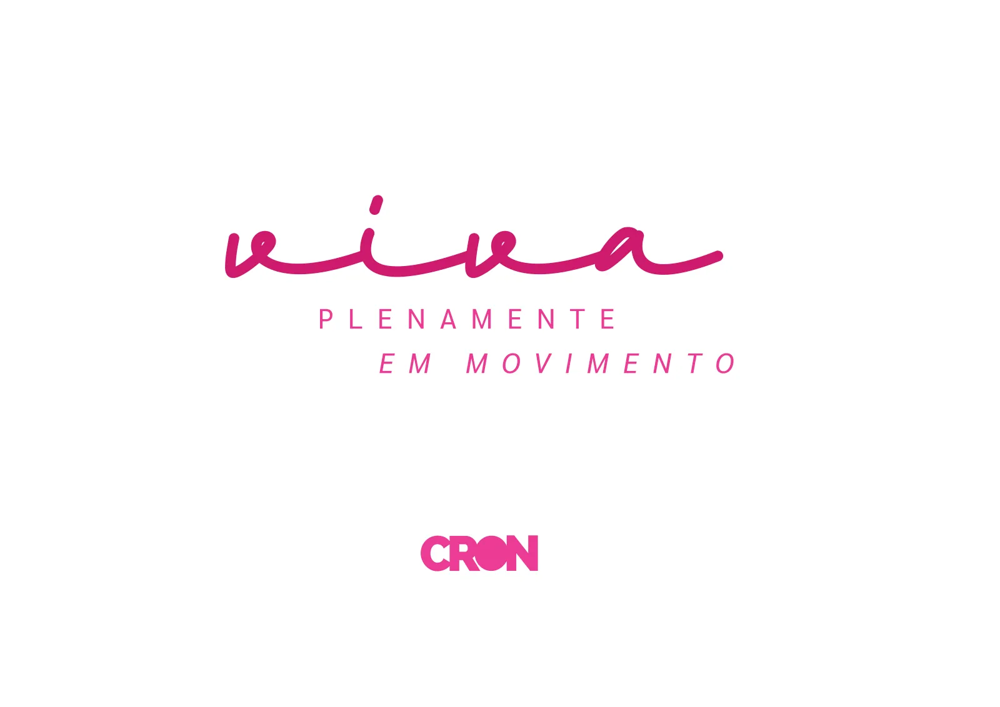
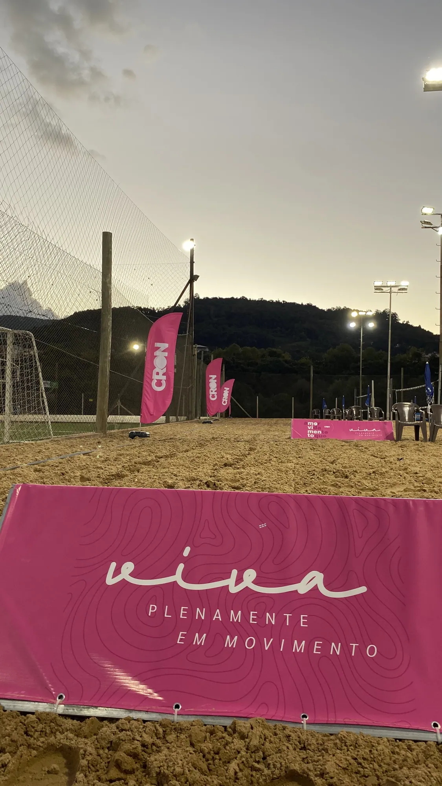
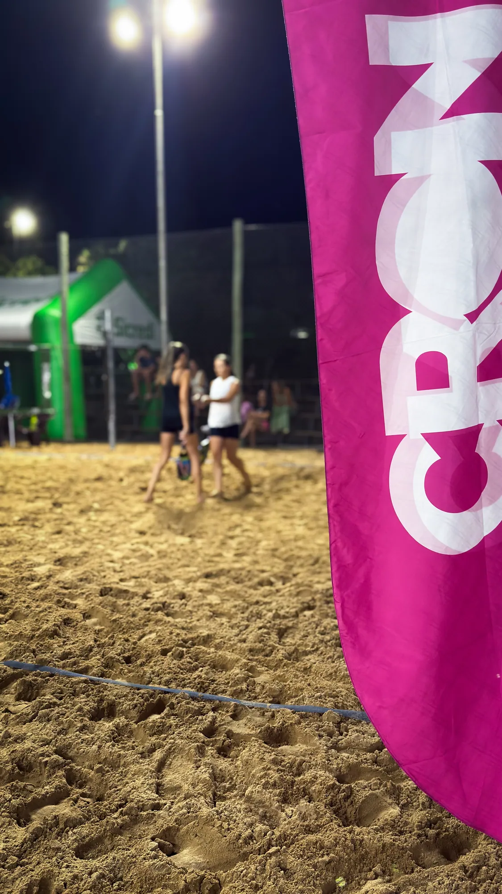
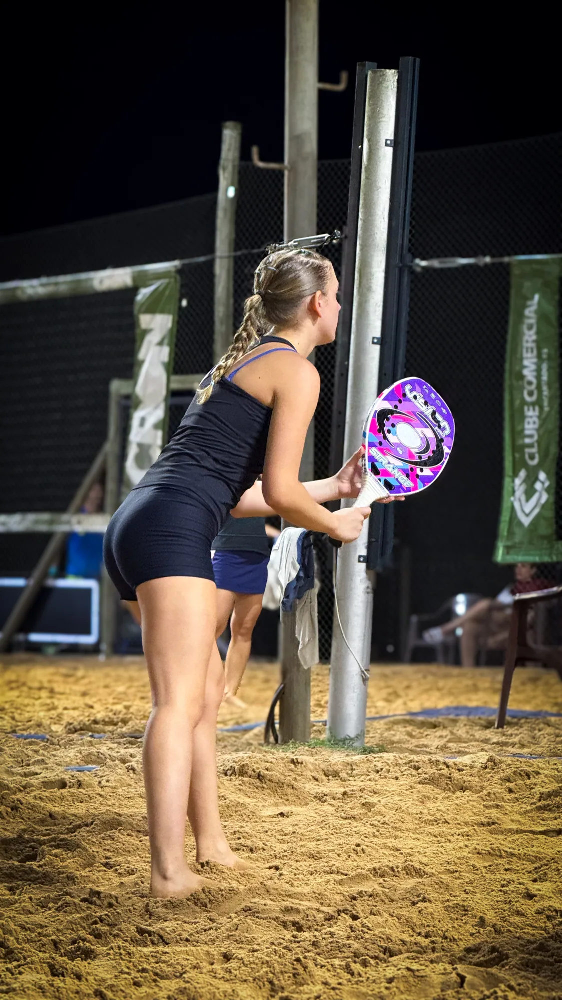
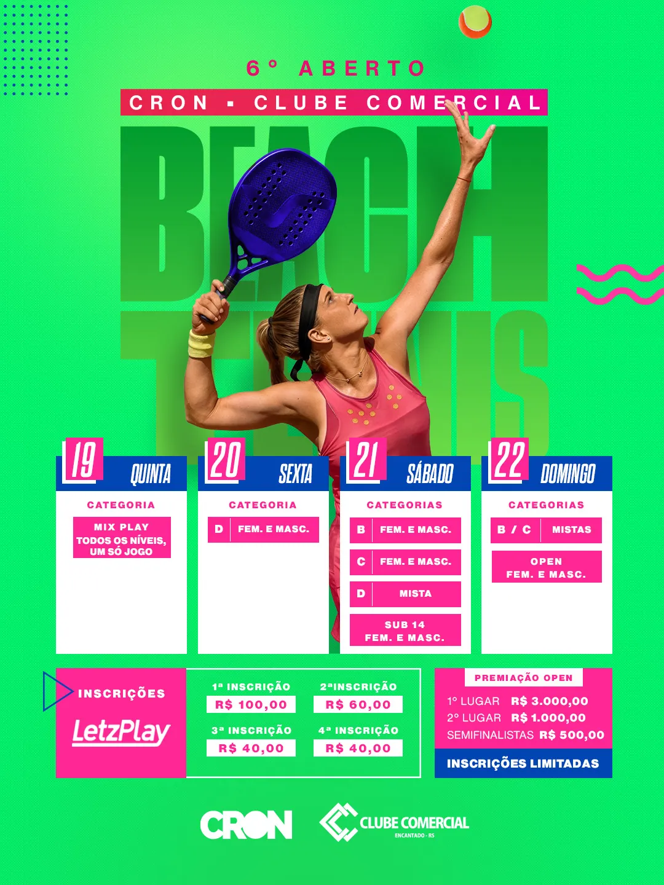
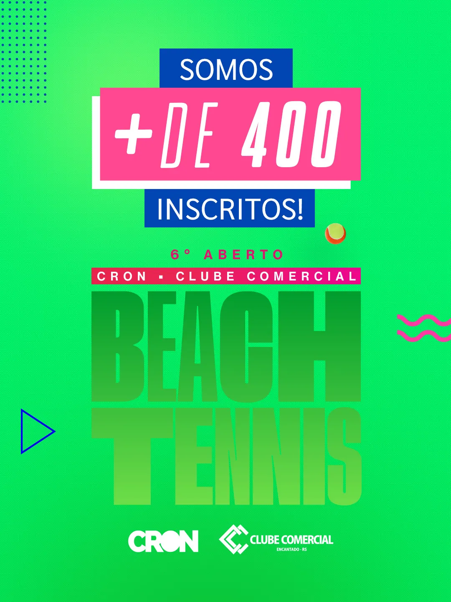
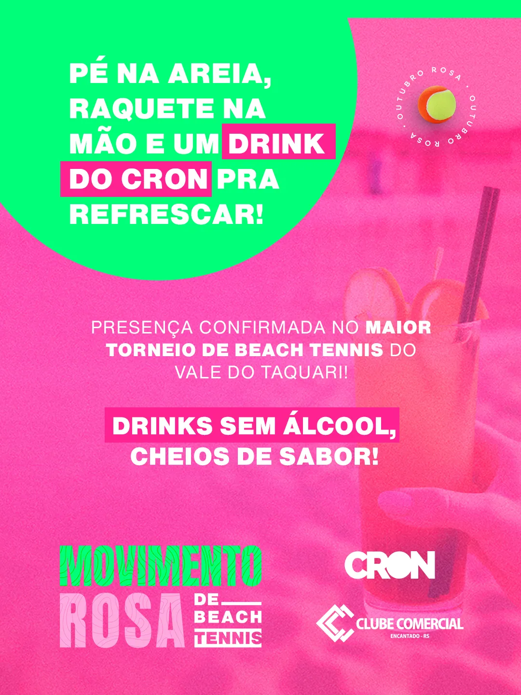
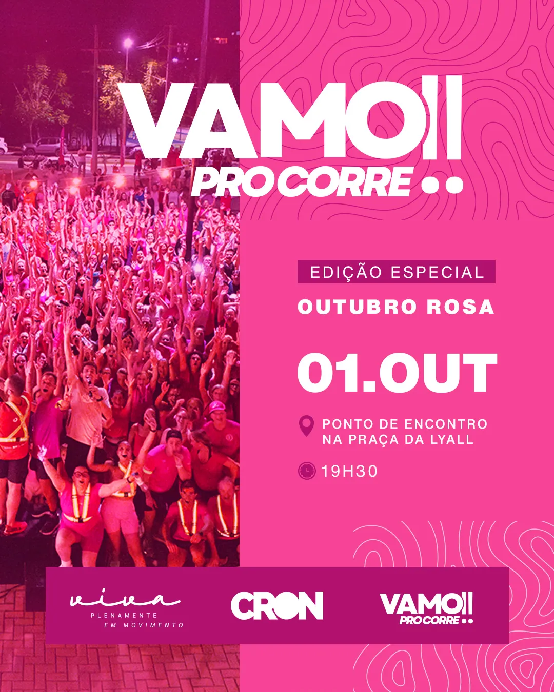
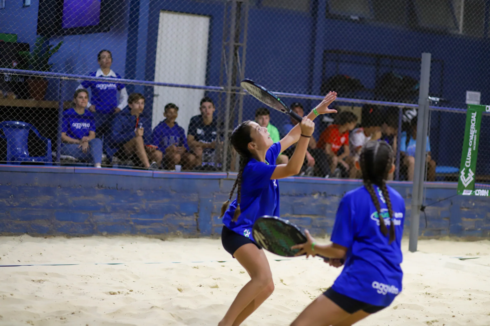
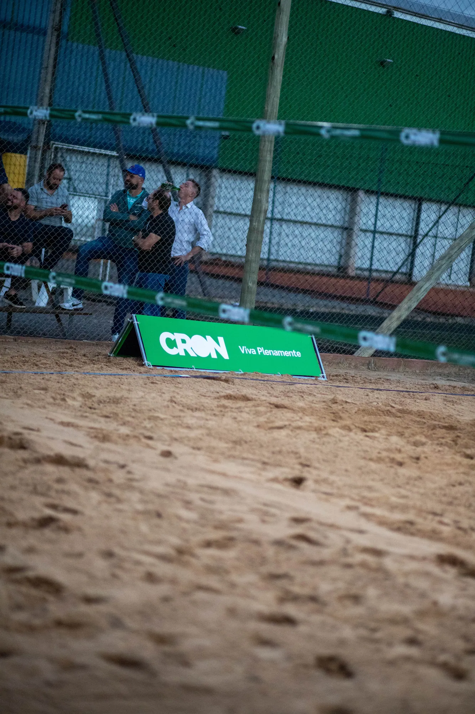

Viva Plenamente em Movimento.

O CRON sempre foi reconhecido pelo tratamento do câncer, e isso prendia a marca ao momento da doença. Para falar de prevenção de um jeito mais leve e inspirador, levamos o CRON para onde as pessoas se movimentam.
A ideia
Viva Plenamente em Movimento, uma extensão da assinatura institucional Viva Plenamente, aplicada a ações de saúde por meio do esporte e da atividade física.
Onde ela vive
Nos torneios de beach tennis da Copa CRON, que chegou à 6ª edição, e na parceria com o grupo Vamo pro Corre, que reúne gente para caminhar e correr.
O resultado
O CRON passou a ser percebido também pela prevenção e a falar com públicos que ainda não conheciam a instituição, com mais engajamento nos eventos e nas redes.




A Copa no feed




Do saque ao pódio


Saúde em todas as fases, inclusive em movimento.